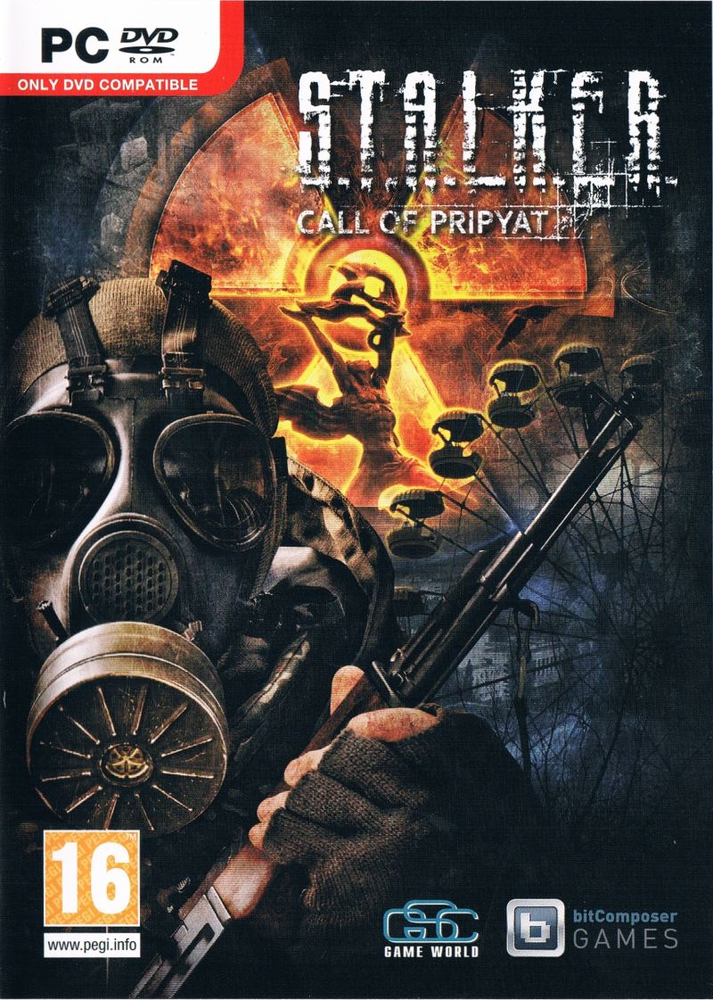

S.T.A.L.K.E.R. Call of Pripyat

| Розробник | GSC Game World |
|---|---|
| Видавець | GSC World Publishing (Україна) |
| Дата виходу | 02.10.2009 |
| Жанр | Шутер від першої особи Рольова відеогра |
| Платформа | Microsoft Windows |
| Системні вимоги | Microsoft Windows XP Процесор 2.2 GHz 768 MB ОЗП 8 ГБ на твердому диску 128 МБ DirectX 8 сумісна відеокарта |
| Наступна гра | S.T.A.L.K.E.R. 2 |
| Попередня гра | S.T.A.L.K.E.R. Чисте Небо |
S.T.A.L.K.E.R.: Поклик Прип'яті - українська комп'ютерна гра в жанрі шутер від першої особи / рольова гра від компанії GSC Game World, сиквел до гри «S.T.A.L.K.E.R.: Тінь Чорнобиля». Вихід гри відбувся 2 жовтня 2009 року
Відомості про розробку гри
7 квітня 2009 газета «Комсомольська правда» провела онлайн-конференцію з Сергієм Григоровичем, генеральним директором компанії GSC Game World. На конференції Григорович заявив про роботу над другим аддоном до оригінальної гри «STALKER: Тінь Чорнобиля» та про роботу над другою частиною гри.
На цій же конференції Григорович повідомив офіційну назву другого аддона — «Поклик Прип'яті». 30 квітня 2009 компанія GSC Game World офіційно анонсувала гру на своєму офіційному сайті, розкривши сюжет гри, безліч її деталей і особливостей.
У травневому номері українського журналу «Геймплей» № 5(45) було опубліковано обширне прев'ю гри. Журналісти привели безліч нових відомостей про гру, описали сюжет, геймплейні нововведення, загальний дизайн, коротко і попередньо оцінили гру і спробували спрогнозувати її майбутнє. 15 травня 2009 відкрився офіційний сайт гри. На ньому відразу ж з'явилися системні вимоги гри.
9 вересня 2009 старший маркетинговий менеджер AMD-ATI Ян МакНоутон у своєму блозі опублікував статтю «DirectX 11 — Що можна чекати!», В якій описав переваги та основні особливості Direct3D 11. У цій статті він заявив, що «STALKER: Поклик Прип'яті», поряд з «BattleForge» і «Colin McRae: Dirt 2», буде використовувати DirectX 11.
Передмова до гри (спойлери до попередньої частини)
Після того, як «Випалювач мізків» був відключений і прохід до центру Зони виявився відкритий, уряд вирішує провести великомасштабну військову операцію під кодовою назвою «Фарватер». Метою операції є взяття ЧАЕС під контроль військових. Військові склали детальні карти розташування аномальних полів, щоб по безпечному маршруту дійти до ЧАЕС. Незабаром 5 вертольотів з групи «СКАТ» з десантом на борту взяли курс на ЧАЕС.
Однак план провалився: зв'язок з вертольотами пропав, жоден з них на базу не повернувся. Для того, щоб дізнатися причину такого фіаско, Служба безпеки України направляє свого агента, колишнього сталкера, майора Олександра Дегтярьова в центр Зони. Першорядним завданням Дегтярьова є пошук п'яти зниклих вертольотів, в кожному з яких міститься частина якоїсь важливої інформації.
Після відключення «Випалювача мізків» групи сталкерів почали масово підходити до центру Зони. На місцевості під назвою «Затон» (осушена частина річки Прип'ять) та в околицях заводу «Юпітер» почали утворюватися загони вільних сталкерів і бандитів. Експедиційні загони «Боргу» і «Свободи» також прийшли на ці землі і війна між ними продовжилась.